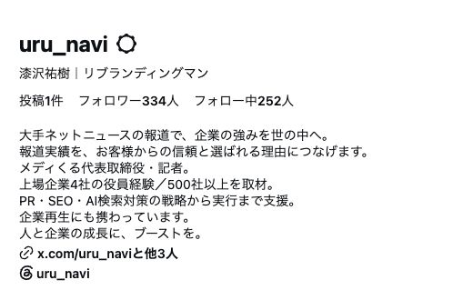
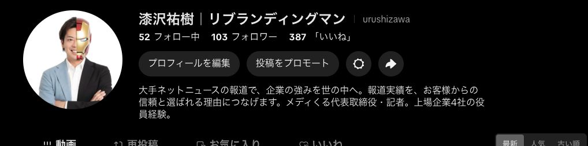
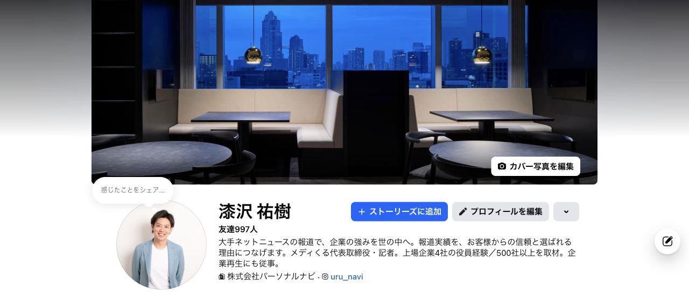

X
更新確認済み
採用した紹介文
大手ネットニュースの報道で、企業の強みを世の中へ。報道実績を、お客様からの信頼と選ばれる理由につなげます。メディくる代表取締役・記者。上場企業4社の役員経験／500社以上を取材。PR・SEO・AI検索対策の戦略から実行まで支援。企業再生にも携わっています。人と企業の成長に、ブーストを。
SNSプロフィール 更新確認
名前・既存リンク変更なし
確認済みなのは紹介文です。各画像の下に、採用した文章をそのまま掲載しています。
確認記録：2026年11月17日 05:03（日本時間）
採用した紹介文
大手ネットニュースの報道で、企業の強みを世の中へ。報道実績を、お客様からの信頼と選ばれる理由につなげます。メディくる代表取締役・記者。上場企業4社の役員経験／500社以上を取材。PR・SEO・AI検索対策の戦略から実行まで支援。企業再生にも携わっています。人と企業の成長に、ブーストを。

採用した紹介文
大手ネットニュースの報道で、企業の強みを世の中へ。 報道実績を、お客様からの信頼と選ばれる理由につなげます。 メディくる代表取締役・記者。 上場企業4社の役員経験／500社以上を取材。 PR・SEO・AI検索対策の戦略から実行まで支援。 企業再生にも携わっています。 人と企業の成長に、ブーストを。

採用した紹介文
大手ネットニュースの報道で、企業の強みを世の中へ。報道実績を、お客様からの信頼と選ばれる理由につなげます。メディくる代表取締役・記者。上場企業4社の役員経験。
本人のTikTokアプリで保存。

採用した紹介文
大手ネットニュースの報道で、企業の強みを世の中へ。報道実績を、お客様からの信頼と選ばれる理由につなげます。メディくる代表取締役・記者。上場企業4社の役員経験／500社以上を取材。企業再生にも従事。
短い紹介欄を更新。詳細欄には既存のメディくる段落がなかったため、個人の文章や経歴は維持しています。